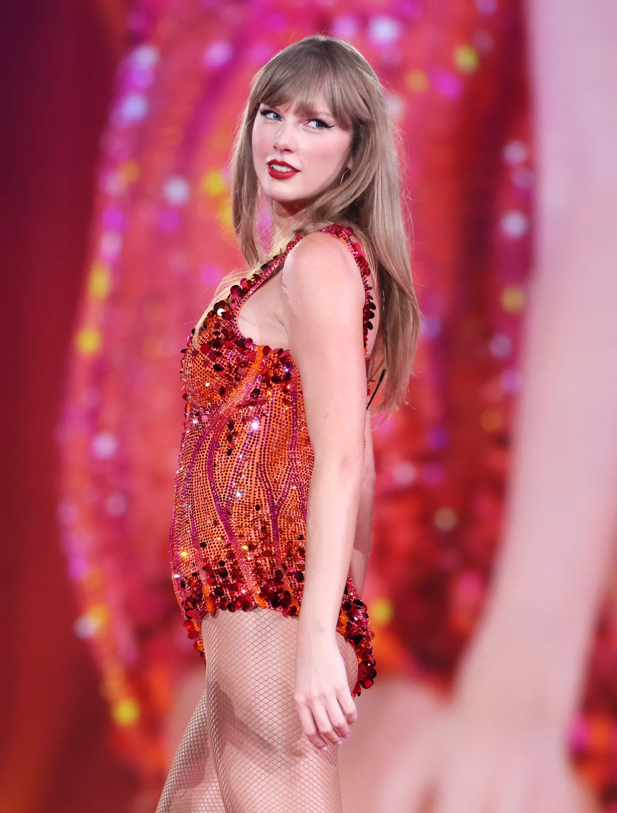
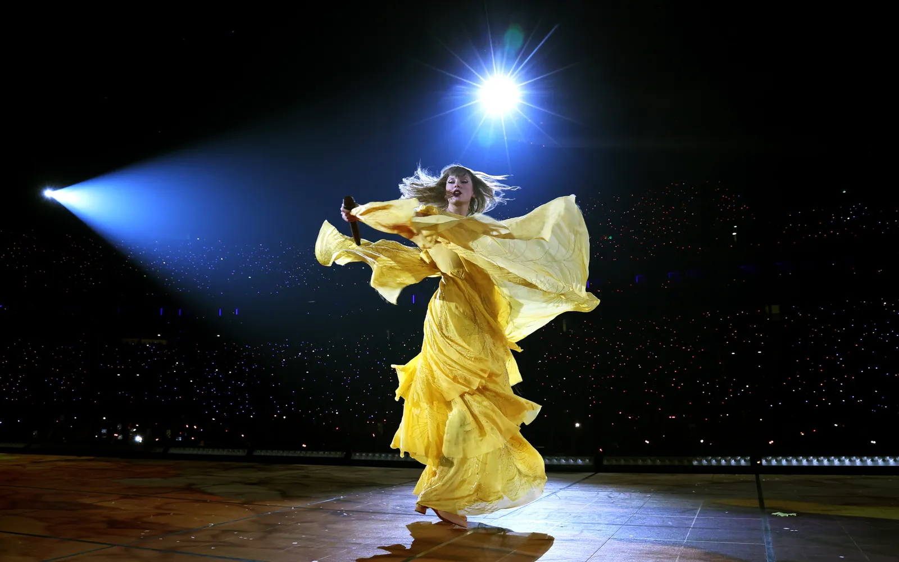
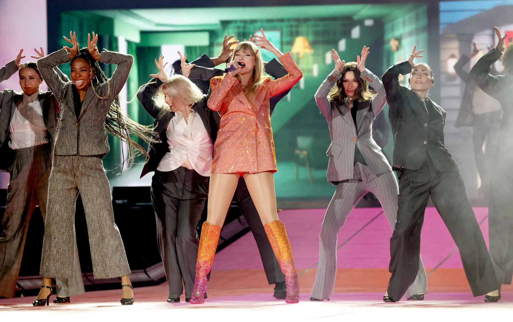
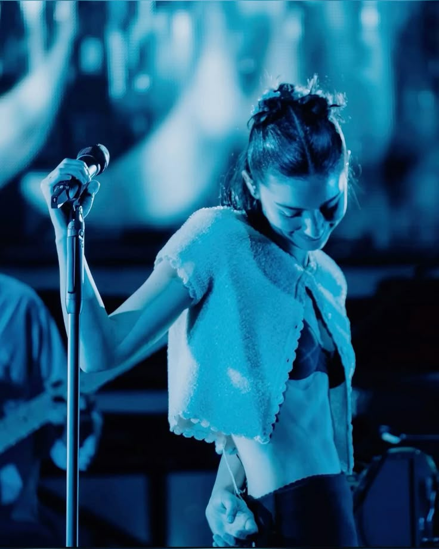
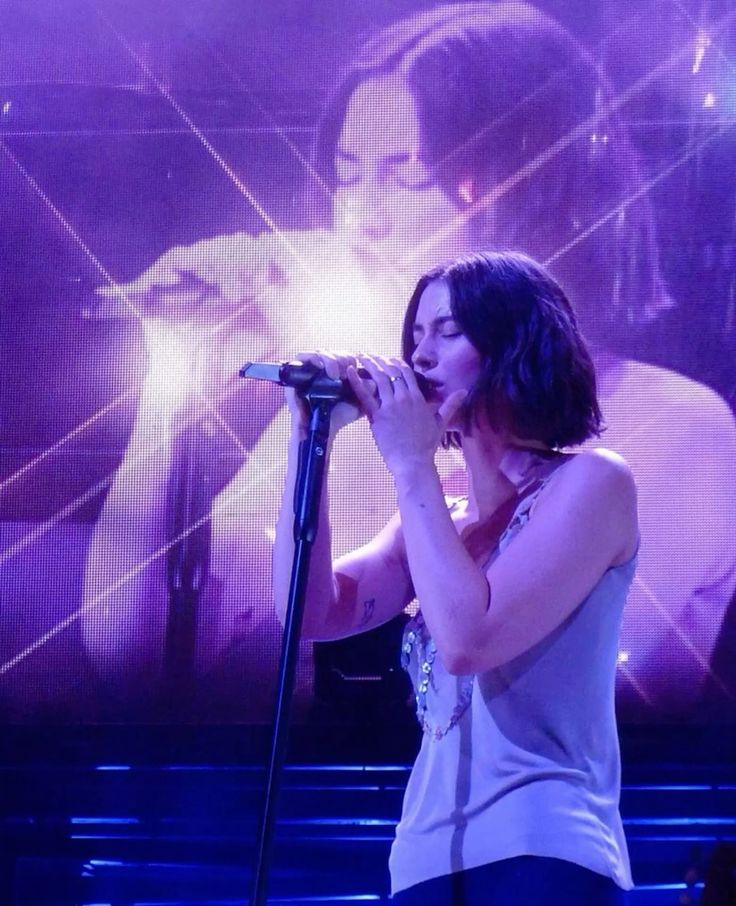
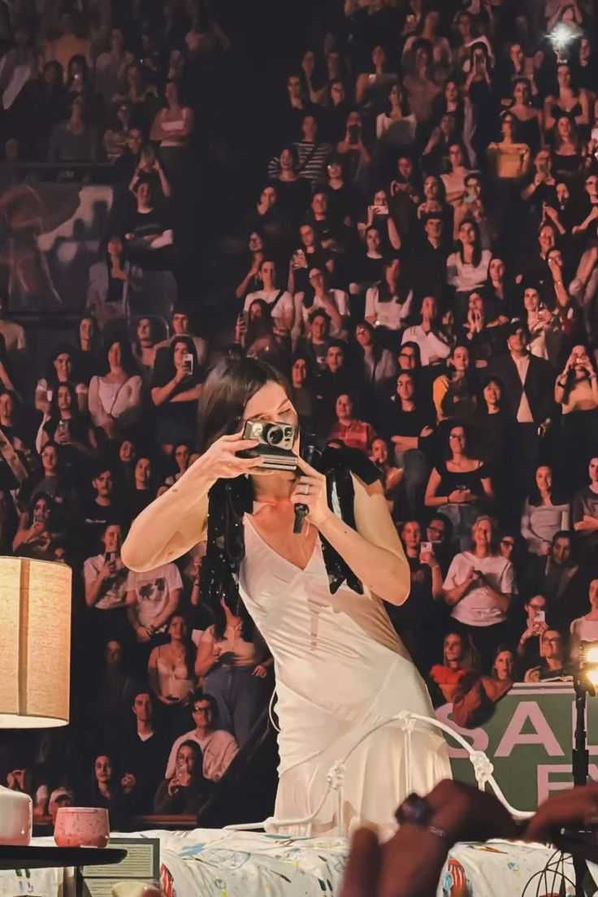
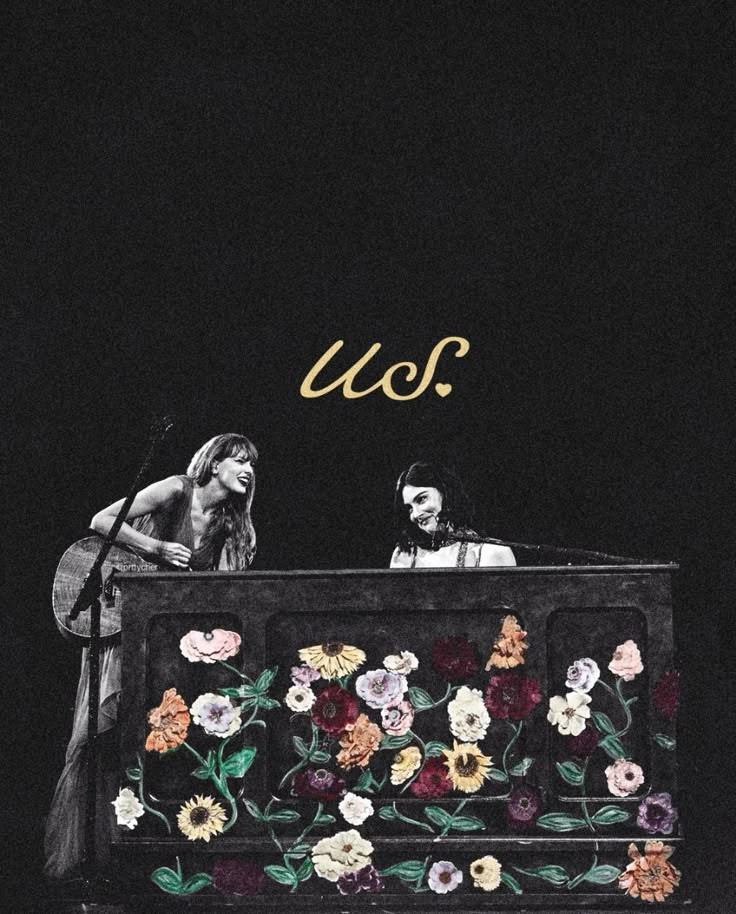

Taylor Swift's Corner
Dive into her discography, Eras Tour highlights, and the latest news from the music icon herself.



Gracie Abrams' Haven
Celebrate Gracie Abrams’ albums, songwriting, and unforgettable live performances.



The Taygracie Connection
We celebrate Taylor and Gracie’s friendship, collaborations, and unforgettable moments together.

Fan Art & Fanfiction
This section is for the community. Share and appreciate fan creations inspired by Taylor and Gracie.
(Placeholder – you’d need a backend to allow uploads.)